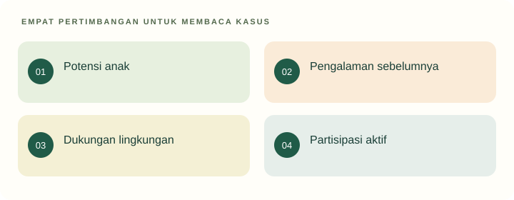

Tujuan pembelajaran
- Menjelaskan hubungan potensi manusia, lingkungan, dan pendidikan.
- Mengkritisi pandangan deterministik tentang anak.
- Merumuskan dukungan yang menghormati martabat dan partisipasi anak.
Jika anak memiliki potensi, mengapa ia masih memerlukan pendidikan?
Seorang mahasiswa mengatakan bahwa anak seperti kertas kosong sehingga guru bebas membentuknya. Temannya berpendapat bahwa semua perkembangan akan terjadi sendiri sehingga campur tangan guru hanya mengganggu.
Temukan persoalan konseptual
Sebelum membaca penjelasan, pisahkan kejadian yang dinyatakan dalam kasus dari dugaan Anda. Gunakan pertanyaan berikut untuk menyiapkan analisis.
- Apa tujuan pendidikan yang sedang dipertaruhkan?
- Pengalaman apa yang dialami anak, dan informasi apa yang belum tersedia?
- Konsep atau jenis sumber apa yang diperlukan untuk menilai tindakan pendidik?

Potensi memerlukan kondisi pengembangan
Pernyataan bahwa manusia dapat dididik menunjukkan adanya kemungkinan belajar dan berubah. Pernyataan bahwa manusia perlu dididik menekankan pentingnya hubungan, pengalaman, dan pewarisan pengetahuan serta nilai. Keduanya tidak berarti pendidik mengendalikan seluruh hasil perkembangan. Anak membawa kondisi biologis, pengalaman, kecenderungan, dan tindakan aktifnya sendiri.
Secara pedagogis, posisi yang lebih dapat dipertanggungjawabkan adalah mengakui hubungan potensi dan lingkungan. Guru menyediakan kesempatan, mengamati respons, lalu menyesuaikan bantuan. Ketika anak belum mau bercerita, keputusan yang masuk akal bukan langsung menyimpulkan kemampuan rendah. Periksa rasa aman, bahasa yang biasa digunakan, kedekatan dengan pendidik, serta kesempatan berbicara.
Martabat dan suara anak
Martabat berarti anak bernilai sebagai manusia, terlepas dari prestasi atau kepatuhannya. Anak memiliki kebutuhan untuk dilindungi sekaligus kesempatan berpartisipasi sesuai kapasitasnya. Dalam pendidikan, penghormatan itu diterjemahkan menjadi cara menyapa, memberi pilihan yang bermakna, dan mendengarkan alasan. Perlindungan anak memberi dasar yuridis untuk menolak kekerasan dan diskriminasi (UU 35/2014).
Partisipasi tidak berarti semua keputusan diserahkan kepada anak. Guru dapat menawarkan pilihan tempat membaca, tetapi tetap membatasi perilaku yang membahayakan. Jelaskan batas dengan bahasa yang konkret: pasir tetap di bak agar tidak masuk mata teman. Pendidik menjalankan tanggung jawab sambil membantu anak memahami alasan suatu aturan.
Keterdidikan bukan keseragaman
Kemampuan dididik tidak mengharuskan semua anak mencapai hal yang sama pada saat yang sama. Pengalaman bahasa, akses bermain, kondisi tubuh, dan relasi keluarga berbeda. Mengakui perbedaan bukan alasan menurunkan harapan secara sembarangan; tugas guru adalah mencari jalan masuk yang memungkinkan setiap anak berpartisipasi.
Misalnya, dalam kegiatan mengenalkan diri, seorang anak dapat berbicara, anak lain menunjuk gambar keluarganya, dan anak lain dibantu pertanyaan singkat. Tujuannya tetap membangun komunikasi dan pengenalan diri. Bentuk respons dapat bervariasi tanpa menghilangkan arah pendidikan. Keputusan ini merupakan contoh rancangan, bukan resep yang wajib diterapkan pada semua kelompok.
Pendidikan sepanjang hayat dan posisi AUD
Pendidikan berlangsung melampaui sekolah. Orang belajar melalui keluarga, pekerjaan, komunitas, serta refleksi atas pengalaman. Masa usia dini memberi fondasi penting, tetapi tidak menentukan nasib secara mutlak. Hindari narasi bahwa kesempatan belajar berhenti setelah suatu usia atau bahwa kegagalan satu kegiatan akan merusak masa depan anak.
Bagi calon guru, pendidikan sepanjang hayat juga berarti kesediaan memperbarui pemahaman. Pengetahuan tentang anak perlu dibandingkan dengan pengamatan, bacaan, dan komunikasi keluarga. Dalam perspektif Islam, pembahasan potensi dan tanggung jawab dapat dihubungkan dengan nilai religius; konsep fitrah tidak disamakan secara otomatis dengan tabula rasa atau satu teori psikologi. Pembacaan normatif dan penjelasan empiris memiliki fungsi yang berbeda.
Kembali ke kasus
Kedua pendapat pada kasus terlalu mutlak. Pandangan pertama mengabaikan keaktifan anak; pandangan kedua mengabaikan peran lingkungan dan tanggung jawab pendidikan. Rumusan yang lebih kuat menyebut kontribusi anak dan bentuk dukungan yang dibutuhkan, kemudian menguji responsnya.
Analisis ini merupakan contoh penalaran pedagogis. Pada situasi nyata, keputusan memerlukan informasi tentang anak dan konteks lembaga.
Latihan terbimbing
Ubah kalimat “anak ini tidak bisa mandiri” menjadi deskripsi yang dapat diamati. Awali dengan “saat memakai sepatu, anak meminta bantuan untuk…”. Bedakan kemampuan yang sudah terlihat, bantuan yang diperlukan, dan kesempatan latihan berikutnya.
Latihan mandiri
Tulis respons untuk orang tua yang berkata “anak saya memang tidak berbakat berbicara”. Hindari diagnosis dan janji hasil. Ajukan dua pertanyaan informasi serta dua bentuk dukungan yang dapat dicoba bersama.
- Konsep digunakan dengan tepat dan dijelaskan hubungannya dengan kasus.
- Fakta dipisahkan dari interpretasi; sumber mendukung jenis klaimnya.
- Tindakan konkret, menghargai anak, dan memiliki cara peninjauan.
Lihat pembahasan
Memberi ruang menyampaikan alasan sambil tetap menjaga batas keselamatan.
Partisipasi berjalan bersama tanggung jawab pendidik. Batas yang jelas dan masuk akal tidak bertentangan dengan penghormatan terhadap anak.
Refleksi calon pendidik
Bagaimana harapan saya terhadap anak dapat berubah menjadi pelabelan yang membatasi kesempatan belajarnya?
Catatan hanya disimpan di peramban ini. Tidak dikirim kepada dosen.
Intisari dan tindak lanjut
- Anak memiliki potensi dan peran aktif; lingkungan serta dukungan tetap diperlukan.
- Martabat tidak bergantung pada prestasi, kepatuhan, atau kecepatan perkembangan.
- Pendidikan berlangsung sepanjang hayat; usia dini penting tanpa menentukan masa depan secara mutlak.
Uji kembali pemahaman di atas melalui latihan mandiri. Jika alasan Anda belum menghubungkan konsep dan tindakan, baca ulang submateri terkait sebelum menandai selesai.
Referensi dan bacaan pendamping
Sumber untuk klaim khusus disebut pada uraian. Buku pendamping tidak dikutip langsung. Jenis dan batas penggunaan setiap rujukan dijelaskan di bawah.
- Republik Indonesia. (2003). Undang-Undang Nomor 20 Tahun 2003 tentang Sistem Pendidikan Nasional.Fokus Pasal 1, 3, 13, dan 28. Status UU secara keseluruhan tidak berarti seluruh pasal bebas perubahan atau putusan pengadilan.
- Republik Indonesia. (2014). Undang-Undang Nomor 35 Tahun 2014 tentang Perubahan atas Undang-Undang Nomor 23 Tahun 2002 tentang Perlindungan Anak.Dibaca bersama UU dasar dan perubahan berikutnya, termasuk UU 17/2016. Materi ini berfokus pada hak anak, bukan penetapan sanksi pidana.
- National Association for the Education of Young Children. (2022). Developmentally appropriate practice in early childhood programs serving children from birth through age 8 (4th ed.).Buku utama pendamping. Cakupan sampai usia 8 tahun berbeda dari definisi yuridis PAUD Indonesia; tidak direproduksi di portal.